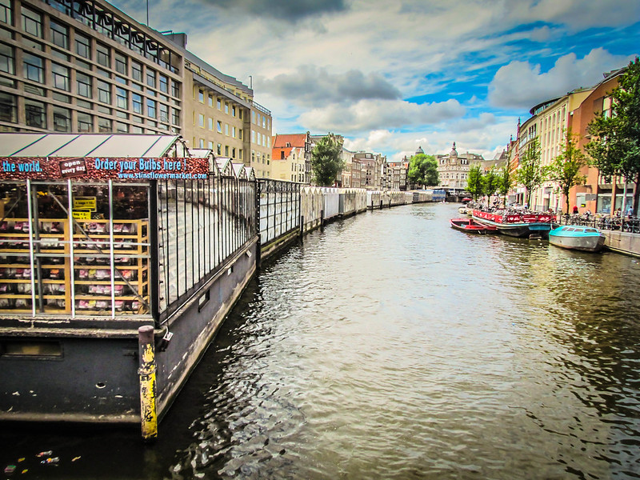
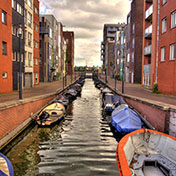
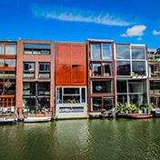

Amsterdam’s Flower Market is a renowned icon on the Singel canal, at the heart of the city’s UNESCO-listed Canal Ring. The market here actually dates from 1862, when flower growers would sail their wares on barges into the city centre via the Amstel River.
- Amsterdam, Netherlands
- 14
- 5
- 

- 